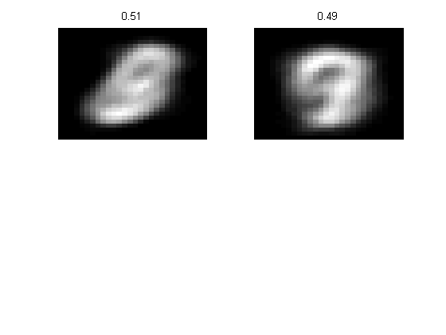
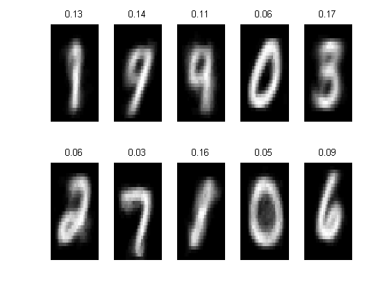

Bernoulli mixture model for mnist digits
Contents
Setup data
setSeed(0);
binary = true;
keepSparse = false;
Ntest = 1000;
if 1
Ntrain = 1000;
Kvalues = [2, 10];
else
Ntrain = 1000;
Kvalues = 2:15;
end
[Xtrain, ytrain, Xtest, ytest] = setupMnist('binary', binary, 'ntrain',...
Ntrain,'ntest', Ntest,'keepSparse', keepSparse);
Xtrain = Xtrain + 1;
Xtest = Xtest + 1;
Fit
[n, d] = size(Xtrain);
NK = length(Kvalues);
logp = zeros(1, NK);
bicVal = zeros(1, NK);
options = {'maxIter', 10, 'verbose', true};
model = cell(1, NK);
for i=1:NK
K = Kvalues(i);
fprintf('Fitting K = %d \n', K)
model{i} = mixModelFit(Xtrain, K, 'discrete', options{:});
logp(i) = sum(mixModelLogprob(model{i}, Xtest));
nParams = K*d + K-1;
bicVal(i) = -2*logp(i) + nParams*log(n);
end
Fitting K = 2
1 loglik: -260265
2 loglik: -222625
3 loglik: -221082
4 loglik: -221031
5 loglik: -221016
Fitting K = 10
1 loglik: -272350
2 loglik: -219626
3 loglik: -209540
4 loglik: -206519
5 loglik: -205111
6 loglik: -204225
7 loglik: -203670
8 loglik: -203195
9 loglik: -202866
10 loglik: -202707
11 loglik: -202585
Plot
for i=1:NK
K = Kvalues(i);
figure();
[ynum, xnum] = nsubplots(K);
if K==10
ynum = 2; xnum = 5;
end
TK = model{i}.cpd.T;
mixweightK = model{i}.mixWeight;
for j=1:K
subplot(ynum, xnum, j);
imagesc(reshape(TK(j, 2, :), 28, 28));
colormap('gray');
title(sprintf('%1.2f', mixweightK(j)));
axis off
end
printPmtkFigure(sprintf('mixBernoulliMnist%d', K));
end
if numel(Kvalues) > 2
figure();
plot(Kvalues, bicVal, '-o', 'LineWidth', 2, 'MarkerSize', 8);
title(sprintf('Minimum achieved for K = %d', Kvalues(minidx(bicVal))));
printPmtkFigure('MnistBICvsKplot');
end
 